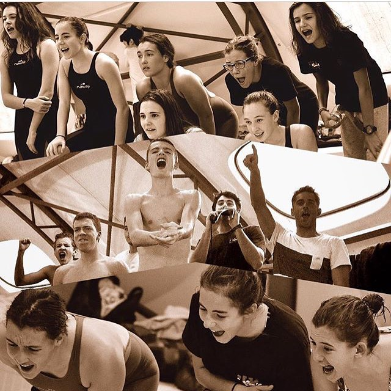

.png)
.png)
Le club Urkirolak Natation a été créé il y a plus de 16 ans par Michel Rouart, figure bien connue du monde associatif et sportif de la côte basque qui a appris à nager à plusieurs générations d’enfants. Initialement club omnisport regroupant plusieurs activités sportives telles que la natation, l’aquagym, le triathlon, la gymnastique… Ces différentes activités sont aujourd’hui assurées par des associations distinctes suite à la dissolution du club omnisport d’origine, l’activité natation étant assurée par le club « Urkirolak Natation - Donibane Ziburu – activités aquatiques diverses », association loi 1901 fondée le 6 décembre 2017.
Le clubL’HISTOIRE D’URKIROLAK NATATION
Tous les adhérents de l’association sont licenciés auprès de la Fédération Française de Natation. En 2020, le club regroupe 98 adhérents (au 30/11/2020, chiffre susceptible d’évoluer en cours de saison) dont 59 nageurs dotés 8 d’une licence « natation pour tous » et 39 nageurs licenciés en compétition.

Le groupe compétition
Ce groupe vise à accompagner la pratique de la natation en compétition avec des entrainements adaptés aux différentes catégories d’âge et aux différents niveaux. Conformément aux catégories définies par la Fédération Française de Natation, les nageurs de ce groupe sont répartis dans 4 sous- groupes : ENF, Avenirs, Jeunes et Juniors-Seniors.
PalmaresLa piscine de Saint Jean de Luz nous accueille depuis sa création en 2005. La convention annuelle tripartite ‘Mairie de St Jean de Luz/ Groupe Equalia/Club Urkirak Natation’ permet un accueil adapté de nos nageurs.
Le groupe 4 nages
La découverte des quatre nages et leur perfectionnement sont les ambitions de ce groupe qui accueille les enfants dès 6 ans. Sans esprit de compétition, ce groupe permet à chacun d'appréhender le milieu aquatique à son rythme.
EntrainementsAge : à partir de 6 ans, jusquà 18 ans (voir plus sur demande). Minimum requis : savoir se déplacer plus ou moins aisément sur 25 m. Les entrainements ont lieu le samedi de 18h à 19h pour les plus jeunes et de 19h à 20h pour les nageurs plus âgés afin d’assurer des groupes d’âge homogènes.

Eau libre
La découverte de la pratique en eau libre est un nouvel objectif de développement pour le club, qui organise depuis 7 ans en collaboration avec le comité directeur de la ligue départementale de natation des Pyrénées Atlantiques une compétition annuelle en eau libre dans la baie de Saint Jean de Luz : les boucles Donibane.
Les recordsCette compétition, réservée aux nageurs licenciés à l’année ou titulaire d’une licence promotionnelle « eau libre », est organisée début Juillet avec plusieurs distances proposées : - Une boucle de 500m, pour les nageurs de 10 ans et moins - Une boucle de 1000m, pour les nageurs de 13 ans et moins - Une boucle de 1800m, pour les nageurs à partir de 14 ans